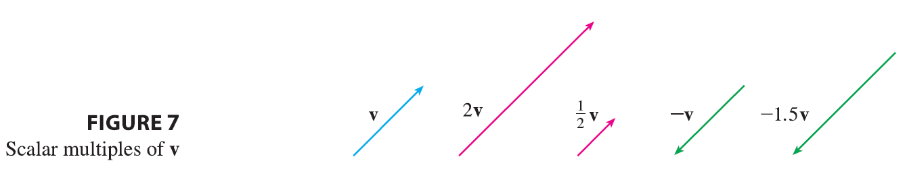

It is possible to multiply a vector by a real number \(c\). (In this context we call the real number \(c\) a scalar to distinguish it from a vector.) For instance, we want \(2\mathbf{v}\) to be the same vector as \(\mathbf{v} + \mathbf{v}\), which has the same direction as v but is twice as long. In general, we multiply a vector by a scalar as follows.
Definition of Scalar Multiplication If \(c\) is a scalar and v is a vector, then the scalar multiple \(c\mathbf{v}\) is the vector whose length is \(|c|\) times the length of v and whose direction is the same as v if \(c > 0\) and is opposite to v if \(c < 0\). If \(c = 0\) or \(\mathbf{v} = \mathbf{0}\), then \(c\mathbf{v} = \mathbf{0}\).

This definition is illustrated in Figure 7. We see that real numbers work like scaling factors here; that’s why we call them scalars. Notice that two nonzero vectors are parallel if they are scalar multiples of one another. In particular, the vector \(-\mathbf{v} = (-1)\mathbf{v}\) has the same length as v but points in the opposite direction. We call it the negative of v.